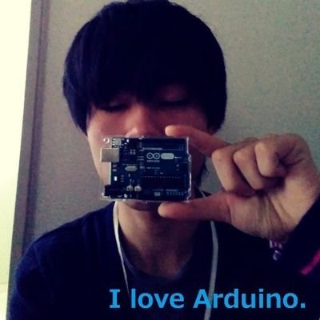

CONTACT
| システム名 | RTKDoragon |
|---|---|
| RTKDoragon垢 | |
| 準備ちう |
DEVELOPER

組込みエンジニア/ Embedded Engineer
たつのぶ
TATSUNOBU
短大時代、人の個人差に関して強い疑問を持つ。
卒業後は上の課程に進学するが、今後の展望とのギャップを感じて中退。その後、自己製作物PRの甲斐あってニートを脱却する。
個人の運転技能をAIで評価点数化するシステムの開発に従事。
納品が終わって落ち着いたころにIoT開発企業に転職。業務外の時間にぼちぼちと「RTKDoragon」の開発に勤しむ。
現在は個人差の謎を解明したいと思いつつAI・IoT分野のつよつよ研究開発者を目指して模索中。
趣味はスイーツ巡り、システム開発、ゴロゴロすること。
- 2015/04 - 2017/03
- ●●短期大学校 電子情報技術科修了
- 2017/04 - 2017/06
- ●●大学校 生産電子情報システム技術科中退
- 2017/07 - 2017/12/24
- NEET (自宅警備員)
- 2017/12/25 - 2019/05/30
- 株式会社●●
AI型自動車運転評価システム(β版)の開発に従事 - 2019/6/1 - ?
- ●●特定技術研究所株式会社
IoTデバイス・ファームウェア開発に従事